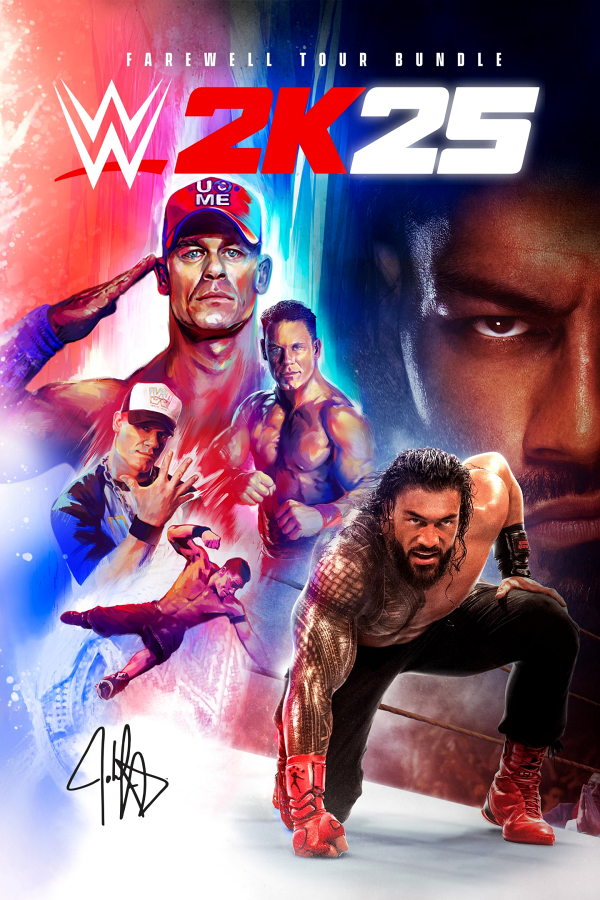

WWE 2K25
Every archived year-end list appearance, including placement and points earned.
About the Game
WWE 2K25 The Bloodline EditionThe Bloodline Edition includes:•The Bloodline Edition Bonus Pack-MyFACTION Persona Card: Mattel Elite Collection Greatest Hits Roman Reigns-MyFACTION Persona Card: Mattel Elite Series 114 Jey Uso-32,500 Virtual Currency •WrestleMania 41 Pack (Available Summer 2025)*-WrestleMania 41 Arena-MyFACTION Persona Card: New playable Superstar (TBA)-MyFACTION Persona Card: WrestleMania Main Event #1 (TBA)-MyFACTION Persona Card: WrestleMania Main Event #2 (TBA)•The Rock Nation of Domination Pack-MyFACTION Persona Card: The Rock (Nation of Domination) (not available for individual purchase)•Ringside Pass-Season Pass -5 post-launch DLC Character Packs -SuperCharger-Superstar Mega-Boost -MyRISE Boost -100K VC •Deadman Edition Bonus Pack-MyFACTION Persona Card: Undertaker ‘90-MyFACTION Persona Card: Mattel Elite “Greatest Hits” Undertaker*-Usable Urn*-Brother Love Manager•Wyatt Sicks Pack-MyFACTION Persona Cards: Uncle Howdy, Dexter Lumis, Nikki Cross, Joe Gacy, Erick Rowan•15,000 Virtual Currency LEGAL LINES:*Exact release date of WrestleMania 41 Pack content, Mattel Elite “Greatest Hits” Undertaker and Usable Urn to be announced post-launch and subject to change. WWE 2K25 Deadman EditionDeadman Edition includes:•Deadman Bonus Pack -MyFACTION Persona Card: Undertaker ‘90 -MyFACTION Persona Card: Mattel Elite “Greatest Hits” Undertaker* -Usable Urn* -Brother Love Manager•Season Pass -5 post-launch DLC Character Packs -SuperCharger•Wyatt Sicks Pack -MyFACTION Persona Cards for: Uncle Howdy Dexter Lumis Nikki Cross Joe Gacy Erick Rowan•15,000 VC LEGAL LINES:*Exact release date of the Mattel Elite Collection Greatest Hits Undertaker and Usable Urn to be announced post-launch and subject to change. About the GameA ROSTER FOR THE AGESWWE 2K25 brings you an unparalleled lineup of current Superstars, Legends and Hall of Famers. The 300+ stacked roster spans multiple generations and features Seth "Freakin" Rollins, Undertaker, "The American Nightmare" Cody Rhodes, CM Punk, Jade Cargill, and more.2K SHOWCASE: THE BLOODLINE'S DYNASTYThe all-new Showcase, hosted by “The Wiseman” Paul Heyman, celebrates one of the most historic family dynasties in wrestling. Relive legendary showdowns or dream matches between The Bloodline and WWE Superstars and Legends.A UNIFIED MyRISETake control of your Superstar from the women’s or men’s divisions in a singular multi-gender MyRISE storyline where Bayley, Kevin Owens, and other Superstars infiltrate NXT in an attempt to take control of the entire WWE universe. Featuring new brawl environments, unlockable arenas, characters, and more—plus new ally storylines involving Jey Uso, Bianca Belair, and other WWE Superstars.MyGM GOES WORLDWIDETake your show on the road with MyGM, now featuring online multiplayer. Draft WWE Superstars and Legends to your show’s roster and lead your brand through multi-week seasons.YOUR UNIVERSE, YOUR WAYNew upgrades give greater control over your Universe experience featuring commentary-driven promos with new cutscenes, branching choices, and multiple outcomes.EXPANDED GAMEPLAYIntergender wrestling makes its long-awaited debut in the WWE 2K franchise! Additional features include the return of chain wrestling, Underground and Bloodline Rules match types, barricade diving, and more.
| Released | 2025-03-13 |
|---|---|
| Developer | Visual Concepts |
| Publisher | 2K Games |
| Genres | Simulation, Sports |
| Platforms | PC |
SingleplayerSteam AchievementsMultiplayerSteam CloudCo-opcooperativePartial Controller SupportOnline Co-OpSandboxSplit ScreenLocal Co-OpController
Where to Buy
Game information provided by RAWG.
Points by Year
List History
| Year | Source | List | Placement | Points |
|---|---|---|---|---|
| 2025 | ESPN | The 25 best video games of 2025 | Unranked | 3 |
| 2025 | GameSpot | The Best Games Of 2025 | Unranked | 1 |